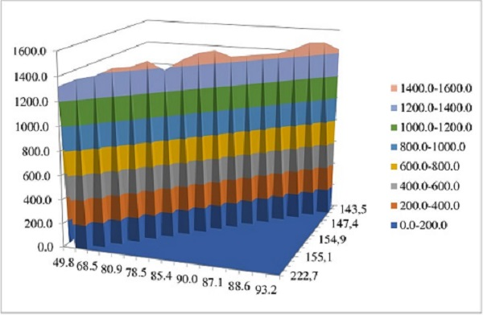

На рис. 1 визуализирована фактическая зависимость
между результативным показателем и двумя
факторами.
В нашем
случае вышеуказанная зависимость показателей
отражается уравнением множественной регрессии:

Рисунок 1 – Фактическая
зависимость Y от Х2 и Х3
Y=331,4
+ 8,4X2 + 2,67X3
(1)
Оценка адекватности уравнения (в нашем случае
множественной) регрессии проводится путем проверки
ряда основных гипотез о предпосылках метода
наименьших квадратов [Горбатков и др., 2012].
Гипотеза
о статистической значимости коэффициентов
регрессии.
Расчетное значение t-критерия
Стьюдента для свободного члена и параметров
регрессии при втором и третьем факторе составило,
соответственно 0,7; 3,01 и 1,7. Табличное значение
показателя в нашем случае составляет 2,13 (α=0,05;
ν=15). Для параметра регрессии при втором факторе
расчетное значение t-критерия Стьюдента превысило
табличное, что указывает на его значимость.